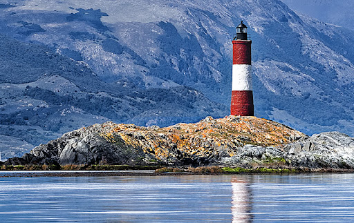

Parque Nacional - Ushuaia
Hogar de especies autóctonas como el zorro colorado.Algunas actividades son: senderismo, el canotaje y la pesca.
Parque NacionalEx Presidio de Ushuaia
Fue epicentro de numerosas historias que sobrevivieron a su clausura. Uno de los personajes mas celebres es "el petiso orejudo"
Ex Presidio

Canal Beagle
Recorrido marítimo donde se pasa por islas con diferentes aves y lobos marimos. El recorrido termina llegando al "Faro de Fin del Mundo".
Faro Fin Del Mundo
Antártida
La inolvidable experiencia de visitar uno de los últimos lugares del planeta donde la naturaleza aún domina, invicta.
Antártida